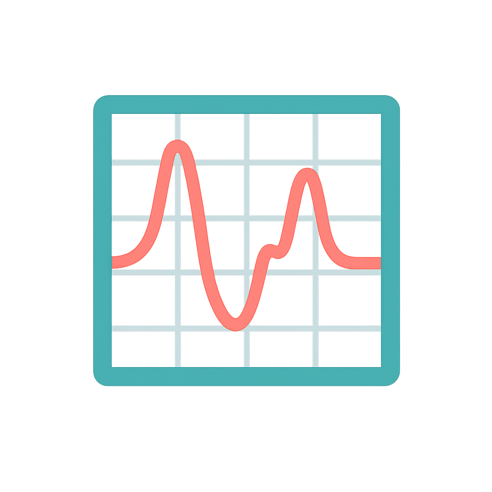

Spectra workspace
Multi-select supported. Each column will match the file name.
Click the chart to place a marker, then add it here.
These settings affect how automatic peaks are selected for the active spectrum.
Transmittance (%T) is converted to absorbance, so absorption bands are detected as peaks. For absorbance or intensity, the values are used directly.
Removes slow background curvature before peak search. arPLS is the default. For very broad bands, compare the corrected curve and try Linear or None if the band is being removed.
Minimum contrast against the local baseline. Increase it to remove noise and weak shoulders; decrease it to find weaker bands.
Minimum separation between peaks in cm⁻¹. Increase it when one broad band is split into many nearby peaks.
Moving-average window in data points. Increase it for noisy spectra, but a large value can flatten narrow peaks. Use an odd number.
Quick start: try Prominence 0.02, Distance 8, Smooth 5, then adjust one setting at a time.
Choose how the slow background is removed from the active spectrum. Apply the correction before searching peaks.
The red line is the baseline used by the fine detector. The green curve is searched for peaks. The broad-pass detector keeps broad bands separately.
Settings are stored only in this browser. Do not import an untrusted settings file.
A personal AI key is sent only to a server with BYOK explicitly enabled. It is never included in logs.
Reference token is SERVICE_TOKEN from the reference-service .env. The analysis token is needed only if your own analysis API requires Bearer authentication. Reference service repository · Analysis server repository